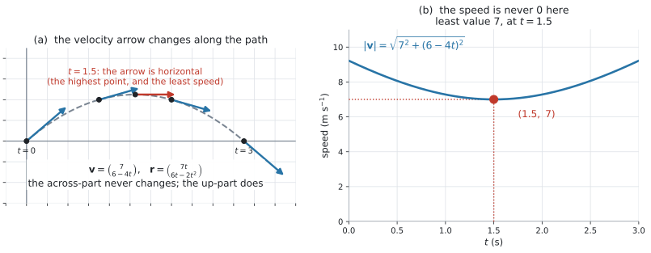
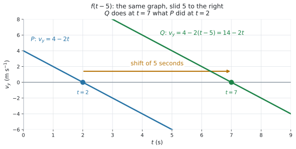

AHL 3.12b — Kinematics: variable velocity（速度が変わる運動）
- velocity（速度）が \(t\) の式になっている運動を読み取れる。
- speed（速さ）\(\lvert \mathbf{v}(t) \rvert\) を \(t\) の式で書き、最小を求められる。
- acceleration（加速度）\(\mathbf{a} = \dfrac{d\mathbf{v}}{dt}\) を、成分ごとの微分で求められる。
- 位置 \(\mathbf{r}(t)\) を、成分ごとの積分で求められる。
- 成分が \(0\) になる時刻から、折り返し（加速度が下向きなら最高点）を求められる。
- projectile motion（放物運動）と circular motion（円運動）が、その特別な場合だと説明できる。
- time shift（時間のずらし）\(f(t-a)\) の意味が言える。
- AHL 3.12a の相対位置と衝突の判定が、そのまま使えることが分かる。
The idea
1. \(\mathbf{v}\) が \(t\) の式になります
AHL 3.12a では、\(\mathbf{v}\) は動かない矢印でした。ここでは、\(\mathbf{v}\) が時刻とともに変わります。
シラバスが挙げている例で見ます。
\[ \mathbf{v} = \begin{pmatrix} v_x \\ v_y \end{pmatrix} = \begin{pmatrix} 7 \\ 6-4t \end{pmatrix} \tag{1}\]

図 1 の (a) が、その様子です。矢印が、進むにつれて向きを変えています。
| \(t\) | \(\mathbf{v}\) | 向き |
|---|---|---|
| \(0\) | \(\begin{pmatrix} 7 \\ 6 \end{pmatrix}\) | 右上 |
| \(1\) | \(\begin{pmatrix} 7 \\ 2 \end{pmatrix}\) | 右やや上 |
| \(1.5\) | \(\begin{pmatrix} 7 \\ 0 \end{pmatrix}\) | 真横 |
| \(2\) | \(\begin{pmatrix} 7 \\ -2 \end{pmatrix}\) | 右やや下 |
| \(3\) | \(\begin{pmatrix} 7 \\ -6 \end{pmatrix}\) | 右下 |
表 1 で、横向きの成分 \(7\) は、ずっと変わりません。 変わるのは縦向きの成分だけです。
\(\mathbf{v}(t)\) は、\(2\) つの関数を縦に並べたものです。
\[ \mathbf{v}(t) = \begin{pmatrix} v_x(t) \\ v_y(t) \end{pmatrix} \]
微分も積分も、それぞれの行に、別々にします（Why it works）。新しく覚える式はありません。 新しい微分法や積分法も要りません。
2. speed は \(\lvert \mathbf{v}(t) \rvert\) で、\(t\) の関数になります
\[ \lvert \mathbf{v} \rvert = \sqrt{v_x^{\,2} + v_y^{\,2}} \tag{2}\]
式 1 なら
\[ \lvert \mathbf{v} \rvert = \sqrt{7^2 + (6-4t)^2} \]
図 1 の (b) が、そのグラフです。
最小を出すときは、\(\sqrt{\ }\) の中だけを見ます。 \(\sqrt{\ }\) は増加する関数なので、中が最小のとき \(\lvert \mathbf{v} \rvert\) も最小です（AHL 3.12a 第8節 と同じ理由）。
\(7^2\) は定数なので、\((6-4t)^2\) が最小、つまり \(0\) のときです。求めた \(t\) が問題の範囲の中にあるかを、必ず確かめてください。 範囲の外なら、範囲の端がいちばん小さくなります。
\[ 6-4t = 0 \quad \Longrightarrow \quad t = 1.5, \qquad \lvert \mathbf{v} \rvert = \sqrt{49} = 7 \]
\(\lvert \mathbf{v} \rvert = 0\) になるのは、すべての成分が同時に \(0\) のときだけです。
上の例では \(v_x = 7\) がずっと \(0\) にならないので、速さは決して \(0\) になりません。 最小でも \(7\) です。
「最小の速さ」と「静止する時刻」は、別の問いです。\(1\) 次元の AHL 5.13 では \(v = 0\) を解けば静止する時刻でしたが、\(2\) 次元では両方の成分が同時に \(0\) でなければ止まりません。
3. acceleration は、成分ごとの微分です
\[ \mathbf{a} = \frac{d\mathbf{v}}{dt} = \begin{pmatrix} \dfrac{dv_x}{dt} \\[4pt] \dfrac{dv_y}{dt} \end{pmatrix} \tag{3}\]
式 1 なら
\[ \mathbf{a} = \begin{pmatrix} 0 \\ -4 \end{pmatrix} \ \text{m s}^{-2} \]
横向きの成分は定数なので、微分すると \(0\) です。
微分のしかたは AHL 5.9b のままです。\(\cos 2t\) のような形が出てきたら、chain rule（合成関数の微分法）を使います（AHL 5.9b 第2節）。
単位は、速度の単位を秒で割ったものです。m s\(^{-1}\) を微分すれば m s\(^{-2}\) になります。
4. 位置は、成分ごとの積分です
\[ \mathbf{r}(t) = \begin{pmatrix} \displaystyle\int v_x \, dt \\[6pt] \displaystyle\int v_y \, dt \end{pmatrix} \tag{4}\]
積分定数は、成分ごとに \(1\) つずつあります。まとめて \(\mathbf{C} = \begin{pmatrix} C_1 \\ C_2 \end{pmatrix}\) と書きます。それを、\(\mathbf{r}\) の値が分かっている時刻から決めます（AHL 5.11a 第6節）。
式 1 で、\(t = 0\) に原点にいたとすると
\[ \int 7 \, dt = 7t + C_1, \qquad \int (6-4t) \, dt = 6t - 2t^2 + C_2 \]
\(\mathbf{r}(0) = \mathbf{0}\) から \(C_1 = C_2 = 0\) なので
\[ \mathbf{r} = \begin{pmatrix} 7t \\ 6t-2t^2 \end{pmatrix} \tag{5}\]
\(v_x = 7\) を積分すると \(7t\) です。\(7\) のままにしてしまう誤りが、いちばん多いところです（演習 \(10\)）。
検算は、微分して戻すことです。\(\dfrac{d}{dt}(7t) = 7\) ✓ もとの \(v_x\) に戻ります。
5. 成分が \(0\) になる時刻を読む
\(v_y = 0\) になる時刻は、縦の動きが折り返す時刻です。式 5 なら \(t = 1.5\) で、そのとき
\[ \mathbf{r}(1.5) = \begin{pmatrix} 10.5 \\ 4.5 \end{pmatrix} \]
ここでは、これが最高点です。\(y\) 座標が最大になる時刻では \(\dfrac{dy}{dt} = v_y = 0\) になるからです。
ただし「\(v_y = 0\) なら最高点」と言えるのは、\(\mathbf{a}\) が下向き（\(y\) が \(t\) の上に凸な \(2\) 次式）のときだけです。円運動では、\(v_y = 0\) が最低点になることもあります（第7節）。
\(y = 0\) になる時刻は、地面の高さに戻る時刻です。
\[ 6t-2t^2 = 2t(3-t) = 0 \quad \Longrightarrow \quad t = 0 \ \text{または} \ t = 3 \]
\(t = 3\) で \(x = 21\) です。
- \(v_y = 0\) … 上下の動きが止まる。\(\mathbf{a}\) が下向きならいちばん高いところ
- \(y = 0\) … 高さが \(0\)。出発した高さに戻ったところ
聞かれているのがどちらか、問題文で確かめてください。上の例では \(t = 1.5\) と \(t = 3\) で、別の時刻です。
6. projectile motion は、特別な場合です

projectile motion（放物運動）は、加速度が下向きの定数である運動です。投げたボールや打ち上げた花火のように、横向きには同じ速さで進み続け、たて向きだけが重力で減っていく運動です。上がっていって、いちばん高いところで \(v_y = 0\) になり、そこから落ちてきます。経路は放物線です。
\[ \mathbf{a} = \begin{pmatrix} 0 \\ -g \end{pmatrix} \quad \Longrightarrow \quad \mathbf{v} = \begin{pmatrix} v_{x0} \\ v_{y0} - gt \end{pmatrix} \tag{6}\]
図 2 が、その例です。\(\mathbf{v} = \begin{pmatrix} 15 \\ 20-10t \end{pmatrix}\) で、\(\mathbf{a} = \begin{pmatrix} 0 \\ -10 \end{pmatrix}\) です。式 6 で \(v_{x0} = 15\)、\(v_{y0} = 20\)、\(g = 10\) とした形です。
新しい公式ではありません。 式 1 と同じ形で、\(v_y\) が \(t\) の \(1\) 次式になっているだけです。
\(g\) の値は、問題文で与えられます。 \(9.8\) のことも \(10\) のこともあるので、問題文の数を使ってください。
7. circular motion も、特別な場合です

circular motion（円運動）は、位置が
\[ \mathbf{r} = \begin{pmatrix} R\cos\omega t \\ R\sin\omega t \end{pmatrix} \tag{7}\]
の形をしている運動です。\(R > 0\) は半径、\(\omega\) は \(1\) 秒あたりに回る角です。
角は radian（弧度法）です（AHL 3.7）。
微分すると（chain rule。AHL 5.9b 第2節）
\[ \mathbf{v} = \begin{pmatrix} -R\omega\sin\omega t \\ R\omega\cos\omega t \end{pmatrix}, \qquad \lvert \mathbf{v} \rvert = R\lvert \omega \rvert \tag{8}\]
\(\cos^2 + \sin^2 = 1\)（AHL 3.8）を使うと、速さが一定になることが出てきます。
図 3 が、\(R = 5\)、\(\omega = 2\) の場合です。速さは \(10\) で一定ですが、矢印はまわり続けています。
speed は scalar（スカラー）、velocity は vector（ベクトル）でした（AHL 3.10a 第1節）。
円運動では \(\lvert \mathbf{v} \rvert\) が変わりませんが、向きが変わり続けます。 ですから \(\mathbf{v}\) は一定ではなく、\(\mathbf{a} \neq \mathbf{0}\) です。
「速さが一定だから加速度は \(0\)」は、誤りです。
8. time shift — \(f(t-a)\)
同じ動きを、\(a\) だけ遅れて始めるとき、式の \(t\) を \(t-a\) に置き換えます。

図 4 は、\(v_y = 4-2t\) の粒子 \(P\) と、\(5\) 秒遅れて同じ動きをする粒子 \(Q\) です。
\[ v_{y,Q}(t) = v_{y,P}(t-5) = 4-2(t-5) = 14-2t \]
\(P\) の \(v_y\) が \(0\) になるのは \(t = 2\)、\(Q\) は \(t = 7\) です。ちょうど \(5\) 秒ずれています。
- \(f(t-a)\)、\(a > 0\) … グラフは右へ \(a\) 動く。遅れて起こる
- \(f(t+a)\)、\(a > 0\) … グラフは左へ \(a\) 動く。先に起こる
\(t\) から引くと遅れる、というのが分かりにくいところです。\(t = a\) を入れると、もとの \(t = 0\) の値になると考えると、確かめられます。
Guidance の Link to: phase shift (AHL 1.13) は、ここのことです。AHL 1.13 の第10節の注記 では \(A\cos(\omega t + B)\) の形で、時間軸の上での移動量が \(-\dfrac{B}{\omega}\) 秒でした。\(f(t-a)\) の \(a\) にあたるのが、その \(-\dfrac{B}{\omega}\) です。
9. AHL 3.12a から、変わることと変わらないこと
変わらないこと。
- 相対位置 \(\overrightarrow{AB} = \mathbf{r}_B - \mathbf{r}_A\)（AHL 3.12a 第5節）
- 衝突の判定 … \(\overrightarrow{AB} = \mathbf{0}\) となる \(t \geq 0\) があるか（AHL 3.12a 第6節）
- 距離 \(d = \lvert \overrightarrow{AB} \rvert\)
変わること。
- \(\overrightarrow{AB}\) が \(t\) の \(1\) 次式とはかぎりません。 ですから \(d^2\) も \(2\) 次式とはかぎらず、平方完成では解けないことがあります（電卓を使います。GDC 第1節）
- 問われるのは \(2\) 次元だけです。シラバスの
in two dimensionsのとおりで、\(3\) 次元が出てくるのは等速度のときだけでした
問題文の読み取りは、AHL 3.12a 第1節 と同じです。\(t = 0\) がいつか、単位は何か、\(t \geq 0\) か——この \(3\) つを先に書き出してください。
Why it works
なぜ成分ごとに微分・積分してよいのか。
\(\mathbf{r}(t) = x(t)\mathbf{i} + y(t)\mathbf{j}\) と書いてみます。\(\mathbf{i}\) と \(\mathbf{j}\) は動かないベクトルです（AHL 3.10a 第3節）。
\(t\) が少し変わったときの変化は
\[ \Delta\mathbf{r} = \Delta x \, \mathbf{i} + \Delta y \, \mathbf{j} \]
なので、\(\Delta t\) で割って \(\Delta t \to 0\) とすれば
\[ \frac{d\mathbf{r}}{dt} = \frac{dx}{dt}\mathbf{i} + \frac{dy}{dt}\mathbf{j} \]
横の変化と縦の変化が互いに影響しないからこうなります。これは AHL 3.10a 第5節 で、足し算を成分ごとにしてよい理由として書いたことと、同じ話です。
積分は微分の逆なので、同じ理由で成分ごとにできます。
なぜ速さの最小が \(\sqrt{\ }\) の中で探せるのか。
\(\lvert \mathbf{v} \rvert \geq 0\) で、\(u \mapsto \sqrt{u}\) は \(u \geq 0\) で増加します。ですから \(\lvert \mathbf{v} \rvert^2\) が最小になる \(t\) で、\(\lvert \mathbf{v} \rvert\) も最小になります。
なぜ projectile motion が特別な場合なのか。
\(\mathbf{a}\) が定数だと、\(\mathbf{v}\) は \(t\) の \(1\) 次式になり、\(\mathbf{r}\) は \(t\) の \(2\) 次式になります。
\[ \mathbf{a} = \begin{pmatrix} 0 \\ -g \end{pmatrix} \ \Longrightarrow \ \mathbf{v} = \begin{pmatrix} v_{x0} \\ v_{y0}-gt \end{pmatrix} \ \Longrightarrow \ \mathbf{r} = \begin{pmatrix} x_0 + v_{x0}t \\ y_0 + v_{y0}t - \tfrac{1}{2}gt^2 \end{pmatrix} \]
\(v_{x0} \neq 0\) なら \(x\) は \(t\) の \(1\) 次式、\(y\) は \(2\) 次式なので、\(t\) を消すと \(y\) が \(x\) の \(2\) 次式になります。だから道すじが放物線になります。
\(v_{x0} = 0\) のときは別で、真上に投げた形になり、道すじはたて \(1\) 本の線分です。
なぜ円運動の速さが一定なのか。
式 8 から
\[ \lvert \mathbf{v} \rvert^2 = R^2\omega^2\sin^2\omega t + R^2\omega^2\cos^2\omega t = R^2\omega^2(\sin^2\omega t + \cos^2\omega t) = R^2\omega^2 \]
\(\sin^2+\cos^2 = 1\)（AHL 3.8）が効いています。\(t\) が消えるので、速さは一定です。
同じ計算で \(\lvert \mathbf{r} \rvert = R\) も出ます。半径が一定だから、円の上にいるわけです。\(\omega \neq 0\) なら、その円の上をまわり続けます。
Worked examples
問題文は英語です。意味が理解できなかったら、問題文の下の「日本語訳」を開いてください。解説は日本語です。
例題 1 A particle moves in a plane with velocity \(\mathbf{v} = \begin{pmatrix} 7 \\ 6-4t \end{pmatrix}\) m s\(^{-1}\), where \(t\) is in seconds.
(a) Find the speed of the particle when \(t = 0\), giving your answer to \(3\) significant figures.
(b) Find the time at which the velocity is horizontal.
(c) Find the least speed of the particle.
(d) Find the acceleration of the particle.
日本語訳
ある粒子が平面上を、速度 \(\mathbf{v} = \begin{pmatrix} 7 \\ 6-4t \end{pmatrix}\) m s\(^{-1}\) で動きます。\(t\) は秒です。
(a) \(t = 0\) のときの速さを、有効数字 \(3\) 桁で求めなさい。
(b) 速度が水平になる時刻を求めなさい。
(c) この粒子の最小の速さを求めなさい。
(d) この粒子の加速度を求めなさい。
(a) \(t = 0\) を入れてから、大きさを出します（式 2）。
\[ \mathbf{v}(0) = \begin{pmatrix} 7 \\ 6 \end{pmatrix}, \qquad \lvert \mathbf{v}(0) \rvert = \sqrt{49+36} = \sqrt{85} \approx 9.22 \ \text{m s}^{-1} \]
(b) 「水平」は、縦の成分が \(0\) ということです。
\[ 6-4t = 0 \quad \Longrightarrow \quad t = 1.5 \ \text{秒} \]
(c) \(\sqrt{\ }\) の中を見ます（第2節）。
\[ \lvert \mathbf{v} \rvert^2 = 49 + (6-4t)^2 \]
\(49\) は定数で、\((6-4t)^2 \geq 0\) です。\((6-4t)^2 = 0\) のときが最小なので、\(t = 1.5\) のときで
\[ \lvert \mathbf{v} \rvert = \sqrt{49} = 7 \ \text{m s}^{-1} \]
(b) と同じ時刻になりました。横向きの成分が変わらないので、縦向きが \(0\) のときがいちばん遅いのです。
(d) 成分ごとに微分します（式 3）。
\[ \mathbf{a} = \begin{pmatrix} 0 \\ -4 \end{pmatrix} \ \text{m s}^{-2} \]
検算（(a) について）。 大きさの幅を使います（AHL 3.10b の「検算のしかた」）。\(0\) でない成分が \(2\) つあるので \(7 < \sqrt{85} < 7+6 = 13\) ✓
検算（(c) について）。 \(t = 1.5\) の前後で、速さが大きくなるかを見ます。
\[ t = 1: \ \sqrt{49+4} = \sqrt{53} \approx 7.28, \qquad t = 2: \ \sqrt{49+4} = \sqrt{53} \approx 7.28 \]
どちらも \(7\) より大きく、しかも \(t = 1.5\) をはさんで同じ値です ✓ 頂点が \(t = 1.5\) にあることの裏付けになります。
(a) \[\lvert \mathbf{v}(0) \rvert = \sqrt{7^2+6^2} = \sqrt{85} \approx 9.22 \ \text{m s}^{-1}\]
(b) \[6-4t = 0 \ \Rightarrow \ t = 1.5 \ \text{s}\]
(c) \[\lvert \mathbf{v} \rvert^2 = 49+(6-4t)^2 \geq 49, \qquad \text{least speed} = 7 \ \text{m s}^{-1} \ \text{at } t = 1.5 \ \text{s}\]
(d) \[\mathbf{a} = \begin{pmatrix} 0 \\ -4 \end{pmatrix} \ \text{m s}^{-2}\]
例題 2 A particle moves with velocity \(\mathbf{v} = \begin{pmatrix} 7 \\ 6-4t \end{pmatrix}\) m s\(^{-1}\) and is at the origin when \(t = 0\).
(a) Find the position vector of the particle at time \(t\).
(b) Find the position of the particle when \(t = 2\).
(c) Find the time, after \(t = 0\), at which the particle returns to the \(x\)-axis, and the position at that time.
(d) Explain why the path is a curve, even though the \(x\)-component of the velocity never changes.
日本語訳
ある粒子が速度 \(\mathbf{v} = \begin{pmatrix} 7 \\ 6-4t \end{pmatrix}\) m s\(^{-1}\) で動き、\(t = 0\) のとき原点にいます。
(a) 時刻 \(t\) における位置ベクトルを求めなさい。
(b) \(t = 2\) のときの位置を求めなさい。
(c) \(t = 0\) より後で、この粒子が \(x\) 軸に戻る時刻と、そのときの位置を求めなさい。
(d) 速度の \(x\) 成分がまったく変わらないのに、道すじが曲線になる理由を説明しなさい。
(a) 成分ごとに積分します（式 4）。
\[ \int 7 \, dt = 7t + C_1, \qquad \int (6-4t) \, dt = 6t - 2t^2 + C_2 \]
\(t = 0\) で原点なので \(C_1 = C_2 = 0\) です（AHL 5.11a 第6節）。
\[ \mathbf{r} = \begin{pmatrix} 7t \\ 6t-2t^2 \end{pmatrix} \]
(b)
\[ \mathbf{r}(2) = \begin{pmatrix} 14 \\ 12-8 \end{pmatrix} = \begin{pmatrix} 14 \\ 4 \end{pmatrix} \]
(c) \(x\) 軸の上では \(y = 0\) です（第5節）。
\[ 6t-2t^2 = 2t(3-t) = 0 \quad \Longrightarrow \quad t = 0 \ \text{または} \ t = 3 \]
\(t = 0\) は出発時なので、求める時刻は \(t = 3\) 秒で、そのとき
\[ \mathbf{r}(3) = \begin{pmatrix} 21 \\ 0 \end{pmatrix} \]
(d) Explain why なので、英語で理由を書きます。
試験ではこう書く
A path is straight only when the velocity keeps the same line of direction. Here the \(x\)-component stays at \(7\) but the \(y\)-component \(6-4t\) changes with time, so the ratio \(v_y : v_x\) changes and the direction of \(\mathbf{v}\) turns. Since \(x = 7t\) is linear in \(t\) while \(y = 6t-2t^2\) is quadratic, eliminating \(t\) gives \(y\) as a quadratic in \(x\), which is a parabola rather than a straight line.
（道すじがまっすぐになるのは、速度の向きの直線が変わらないときだけである。ここでは \(x\) 成分は \(7\) のままだが、\(y\) 成分 \(6-4t\) は時刻とともに変わるので、比 \(v_y : v_x\) が変わり、\(\mathbf{v}\) の向きが回る。\(x = 7t\) は \(t\) の \(1\) 次式、\(y = 6t-2t^2\) は \(2\) 次式なので、\(t\) を消すと \(y\) が \(x\) の \(2\) 次式になり、直線ではなく放物線になる、という意味です。）
検算。 (a) を微分して、もとの \(\mathbf{v}\) に戻るかを見ます。
\[ \frac{d}{dt}\begin{pmatrix} 7t \\ 6t-2t^2 \end{pmatrix} = \begin{pmatrix} 7 \\ 6-4t \end{pmatrix} \]
戻りました ✓ \(\int 7 \, dt\) を \(7\) のままにしていたら、\(1\) つ目が \(0\) になって \(7\) に戻りません。
検算（(c) について）。 まず \(y(3) = 18-18 = 0\) ✓ そのうえで前後を見ます。\(y(2) = 4 > 0\)、\(y(4) = 24-32 = -8 < 0\) で、\(t = 3\) をはさんで符号が変わっています ✓ \(t = 2.5\) などとしていたら、\(y(2.5) = 15-12.5 = 2.5\) で \(0\) になりません。
(a) \[\mathbf{r} = \begin{pmatrix} 7t \\ 6t-2t^2 \end{pmatrix}\]
(b) \[\mathbf{r}(2) = \begin{pmatrix} 14 \\ 4 \end{pmatrix}\]
(c) \[6t-2t^2 = 0 \ \Rightarrow \ t = 0 \text{ or } t = 3; \qquad t = 3 \ \text{s}, \quad \mathbf{r}(3) = \begin{pmatrix} 21 \\ 0 \end{pmatrix}\]
(d) The direction of \(\mathbf{v}\) changes because \(v_y\) depends on \(t\), so the path is not straight; \(x\) is linear and \(y\) is quadratic in \(t\), giving a parabola.
例題 3 A particle moves so that its position vector at time \(t\) seconds is \(\mathbf{r} = \begin{pmatrix} 5\cos 2t \\ 5\sin 2t \end{pmatrix}\), where distances are in metres.
(a) Show that the particle moves on a circle, and state the radius.
(b) Find \(\mathbf{v}\).
(c) Show that the speed is constant, and state its value.
(d) Explain why the velocity is not constant, even though the speed is.
日本語訳
ある粒子の、時刻 \(t\) 秒における位置ベクトルは \(\mathbf{r} = \begin{pmatrix} 5\cos 2t \\ 5\sin 2t \end{pmatrix}\) です。距離の単位はメートルです。
(a) この粒子が円の上を動くことを示し、半径を答えなさい。
(b) \(\mathbf{v}\) を求めなさい。
(c) 速さが一定であることを示し、その値を答えなさい。
(d) 速さが一定であるのに、速度は一定でない理由を説明しなさい。
(a) 原点からの距離を出します。
\[ \lvert \mathbf{r} \rvert^2 = 25\cos^2 2t + 25\sin^2 2t = 25(\cos^2 2t + \sin^2 2t) = 25 \]
\(\cos^2 + \sin^2 = 1\) を使いました（AHL 3.8）。\(\lvert \mathbf{r} \rvert = 5\) で \(t\) によらないので、原点を中心とする半径 \(5\) の円の上を動きます。
(b) 成分ごとに微分します。中身が \(2t\) なので chain rule です（AHL 5.9b 第2節）。
\[ \mathbf{v} = \begin{pmatrix} -10\sin 2t \\ 10\cos 2t \end{pmatrix} \ \text{m s}^{-1} \]
(c)
\[ \lvert \mathbf{v} \rvert^2 = 100\sin^2 2t + 100\cos^2 2t = 100 \]
\(\lvert \mathbf{v} \rvert = 10\) m s\(^{-1}\) で、\(t\) が消えたので一定です。
(d) Explain why なので、英語で理由を書きます。
試験ではこう書く
Speed is the magnitude of the velocity, a scalar, while velocity is a vector carrying both magnitude and direction. Here the magnitude is always \(10\), but the components \(-10\sin 2t\) and \(10\cos 2t\) keep changing: at \(t = 0\) the velocity is \(\begin{pmatrix} 0 \\ 10 \end{pmatrix}\) and at \(t = \tfrac{\pi}{4}\) it is \(\begin{pmatrix} -10 \\ 0 \end{pmatrix}\). The direction therefore turns continuously, so \(\mathbf{v}\) is not constant and the acceleration is not zero.
（速さは速度の大きさで scalar であり、速度は大きさと向きの両方を持つ vector である。ここでは大きさはつねに \(10\) だが、成分 \(-10\sin 2t\) と \(10\cos 2t\) は変わり続ける。\(t = 0\) では速度は \(\begin{pmatrix} 0 \\ 10 \end{pmatrix}\)、\(t = \tfrac{\pi}{4}\) では \(\begin{pmatrix} -10 \\ 0 \end{pmatrix}\) である。したがって向きは回り続けるので \(\mathbf{v}\) は一定ではなく、加速度は \(\mathbf{0}\) ではない、という意味です。）
検算。 \(2\) つの時刻で、実際に値を出します。
\[ \mathbf{r}(0) = \begin{pmatrix} 5 \\ 0 \end{pmatrix}, \ \mathbf{v}(0) = \begin{pmatrix} 0 \\ 10 \end{pmatrix}; \qquad \mathbf{r}\!\left(\tfrac{\pi}{4}\right) = \begin{pmatrix} 0 \\ 5 \end{pmatrix}, \ \mathbf{v}\!\left(\tfrac{\pi}{4}\right) = \begin{pmatrix} -10 \\ 0 \end{pmatrix} \]
どちらも \(\lvert \mathbf{r} \rvert = 5\)、\(\lvert \mathbf{v} \rvert = 10\) ✓ しかも向きは別です ✓ chain rule の \(2\) を落として \(\mathbf{v} = \begin{pmatrix} -5\sin 2t \\ 5\cos 2t \end{pmatrix}\) としていたら、速さが \(5\) になってしまいます。
(a) \[\lvert \mathbf{r} \rvert^2 = 25\cos^2 2t + 25\sin^2 2t = 25 \ \Rightarrow \ \lvert \mathbf{r} \rvert = 5\] The distance from the origin is always \(5\), so the path is a circle of radius \(5\) m.
(b) \[\mathbf{v} = \begin{pmatrix} -10\sin 2t \\ 10\cos 2t \end{pmatrix} \ \text{m s}^{-1}\]
(c) \[\lvert \mathbf{v} \rvert^2 = 100\sin^2 2t + 100\cos^2 2t = 100 \ \Rightarrow \ \lvert \mathbf{v} \rvert = 10 \ \text{m s}^{-1}\]
(d) The magnitude is constant but the direction turns, so the vector \(\mathbf{v}\) is not constant.
例題 4 A particle \(P\) moves with velocity \(\mathbf{v}_P = \begin{pmatrix} 3 \\ 4-2t \end{pmatrix}\) m s\(^{-1}\), where \(t\) is in seconds. A particle \(Q\) moves in exactly the same way, but starting \(5\) seconds later.
(a) Write down \(\mathbf{v}_Q\) in terms of \(t\).
(b) The velocity of \(P\) is horizontal when \(t = 2\). Find the corresponding time for \(Q\).
(c) Find the speed of \(Q\) at that time.
(d) Interpret the time shift in the context of the two particles.
日本語訳
粒子 \(P\) が速度 \(\mathbf{v}_P = \begin{pmatrix} 3 \\ 4-2t \end{pmatrix}\) m s\(^{-1}\) で動きます。\(t\) は秒です。粒子 \(Q\) は、\(P\) とまったく同じ動きを、\(5\) 秒遅れて始めます。
(a) \(\mathbf{v}_Q\) を \(t\) の式で書きなさい。
(b) \(P\) の速度は \(t = 2\) で水平になります。\(Q\) について、それに対応する時刻を求めなさい。
(c) そのときの \(Q\) の速さを求めなさい。
(d) この時間のずらしが、\(2\) 粒子について何を意味するかを述べなさい。
(a) \(t\) を \(t-5\) に置き換えます（第8節）。
\[ \mathbf{v}_Q(t) = \mathbf{v}_P(t-5) = \begin{pmatrix} 3 \\ 4-2(t-5) \end{pmatrix} = \begin{pmatrix} 3 \\ 14-2t \end{pmatrix} \]
\(x\) 成分は定数なので、\(t\) が入っておらず、変わりません。
(b)
\[ 14-2t = 0 \quad \Longrightarrow \quad t = 7 \ \text{秒} \]
\(2+5 = 7\) で、ちょうど \(5\) 秒ずれています。
(c) そのとき \(\mathbf{v}_Q = \begin{pmatrix} 3 \\ 0 \end{pmatrix}\) なので
\[ \lvert \mathbf{v}_Q \rvert = 3 \ \text{m s}^{-1} \]
(d) Interpret なので、\(2\) 粒子の言葉で書きます。
試験ではこう書く
\(Q\) repeats everything \(P\) does, but five seconds later: whatever \(P\) is doing at time \(t\), \(Q\) does at time \(t+5\). So \(Q\)’s velocity is horizontal at \(t = 7\) rather than \(t = 2\), and its least speed of \(3\ \text{m s}^{-1}\) occurs then. The two particles never differ in what happens, only in when it happens.
（\(Q\) は \(P\) のすることをすべて繰り返すが、\(5\) 秒遅れている。\(P\) が時刻 \(t\) にしていることを、\(Q\) は時刻 \(t+5\) にする。だから \(Q\) の速度が水平になるのは \(t = 2\) ではなく \(t = 7\) で、最小の速さ \(3\ \text{m s}^{-1}\) もそのときである。\(2\) 粒子は、何が起こるかではなく、いつ起こるかだけが違う、という意味です。）
検算。 \(t = 5\) を \(\mathbf{v}_Q\) に入れると、\(\mathbf{v}_P(0)\) に戻るはずです。
\[ \mathbf{v}_Q(5) = \begin{pmatrix} 3 \\ 14-10 \end{pmatrix} = \begin{pmatrix} 3 \\ 4 \end{pmatrix} = \mathbf{v}_P(0) \]
戻りました ✓ 符号を取りちがえて \(4-2(t+5) = -6-2t\) としていたら、\(t = 5\) で \(\begin{pmatrix} 3 \\ -16 \end{pmatrix}\) になり、\(\mathbf{v}_P(0)\) に戻りません。
(a) \[\mathbf{v}_Q = \begin{pmatrix} 3 \\ 4-2(t-5) \end{pmatrix} = \begin{pmatrix} 3 \\ 14-2t \end{pmatrix}\]
(b) \[14-2t = 0 \ \Rightarrow \ t = 7 \ \text{s}\]
(c) \[\lvert \mathbf{v}_Q(7) \rvert = 3 \ \text{m s}^{-1}\]
(d) \(Q\) does at time \(t+5\) whatever \(P\) does at time \(t\); only the timing differs.
Common errors
\(\mathbf{v} = \begin{pmatrix} 6 \\ 8-2t \end{pmatrix}\) を積分して \(\mathbf{r} = \begin{pmatrix} 6 \\ 8t-t^2 \end{pmatrix}\) としてしまう誤りです。
\(\int 6 \, dt = 6t\) です。正しくは \(\begin{pmatrix} 6t \\ 8t-t^2 \end{pmatrix}\) です（演習 \(10\)）。
微分して戻せば、すぐ気づけます。 \(\dfrac{d}{dt}(6) = 0\) で、\(6\) には戻りません。
Using your GDC (TI-Nspire CX II)
1. 速さの最小は、グラフで
\(\lvert \mathbf{v} \rvert\) を \(x\) の関数として入れます。
\(f1(x) = \sqrt{7^{2} + \left(6 - 4x\right)^{2}}\)
menu → Analyze Graph → Minimum で下限と上限を聞かれるので、頂点をはさむように選びます。\((1.5,\ 7)\) が出れば 例 1 と合っています。
\(\sqrt{\ }\) のテンプレートは ctrl を押してから x² です。負の数はかっこで囲んでください。
この方法は、\(\lvert \mathbf{v} \rvert^2\) が \(2\) 次式でないときにも使えます。 手計算で平方完成できない形は、こちらで出します（第9節）。
2. 微分と積分は、確かめに使います
menu → Calculus の中の Derivative at a Point と Integral を使います。どちらもテンプレートが出るので、画面に出てくる形のまま入れます。
積分を確かめるには
\[ \int_{0}^{2} \left(6 - 4x\right) dx \]
\(4\) が返ります。これは \(y(2)-y(0)\)、つまり縦の変位です。例 2 では \(y(0) = 0\) なので、そのまま \(y(2)\) になります。\(y(0) \neq 0\) のときは、その分を足してください。
微分のテンプレートに \(6x-2x^2\) を入れて \(x = 1\) で評価すると \(2\) が返り、\(v_y(1) = 6-4 = 2\) と合います。
答案には、手で積分した過程を書いてください。 電卓は確かめのためです。
3. 道すじは parametric で描けます
Graphs のページで menu → Graph Entry/Edit → Parametric を選びます（AHL 3.11 の GDC 第4節）。
- \(x1(t) = 7t\)
- \(y1(t) = 6t - 2t^{2}\)
\(t\) の範囲は、入力行の tmin、tmax をその場で書き換えます。\(0 \leq t \leq 3\) にすれば、図 1 の (a) と同じ弧が出ます。
円運動のときは、角の設定を Radian にしてください（doc → Settings → Document Settings）。\(x_1(t) = 5\cos 2t\) は、radian でないと円になりません。
4. 表で、符号が変わるところを見る
\(v_y\) を関数として入れて ctrl + T を押すと、表が出ます。
f1(x)=6-4x\(6,\ 2,\ -2,\ -6\) と並び、\(x = 1\) と \(x = 2\) のあいだで符号が変わることが見えます。表の刻みは、はじめ \(1\) です（変えられます）。
正確な時刻は、式を解いて出してください。 表は見当を付けるためのものです。
5. 時間のずらしは、式に入れるだけ
\(f(t-a)\) は、電卓でも同じです。
f1(x)=4-2x
f2(x)=f1(x-5)\(f_2\) のグラフが、\(f_1\) を右に \(5\) 動かしたものになります（図 4）。符号の確かめに使えます。
6. 検算のしかた
- 積分したら、微分して戻す（例 2）
- \(t = 0\) を入れる。 与えられた初期条件に合うか見る
- 最小の前後 \(2\) 点で値を出す。 どちらも大きければ、見当は合っています。\(\sqrt{\ }\) の中が \(t\) の \(2\) 次式のときは、対称なら頂点も正しいと言えます（例 1）。\(2\) 次式でないときは、対称でも頂点とはかぎりません（第9節）
- 円運動は、\(\lvert \mathbf{r} \rvert\) と \(\lvert \mathbf{v} \rvert\) を \(2\) つの時刻で出す（例 3）
- 時間のずらしは、\(t = a\) を入れてもとの \(t = 0\) に戻るか見る（例 4）
\(1\) つ目がいちばん確実です。積分定数の落としも、定数成分の積分し忘れも、これで見つかります。
Exercises
各問題に、折りたたみが \(3\) つ付いています。日本語訳、解答例（答案用紙に書くべきこと。英語です）、解説（なぜそうなるか。日本語です）。
まず自分で解いて、次に解答例と見くらべてください。解説は、合わなかったときだけ開けば十分です。
1 A particle has velocity \(\mathbf{v} = \begin{pmatrix} 2t \\ 3 \end{pmatrix}\) m s\(^{-1}\). Find its speed when \(t = 4\), giving your answer to \(3\) significant figures.
日本語訳
ある粒子の速度は \(\mathbf{v} = \begin{pmatrix} 2t \\ 3 \end{pmatrix}\) m s\(^{-1}\) です。\(t = 4\) のときの速さを、有効数字 \(3\) 桁で求めなさい。
\[\mathbf{v}(4) = \begin{pmatrix} 8 \\ 3 \end{pmatrix}, \qquad \lvert \mathbf{v}(4) \rvert = \sqrt{64+9} = \sqrt{73} \approx 8.54 \ \text{m s}^{-1}\]
先に \(t = 4\) を入れてから、大きさを出します（式 2）。
\(\sqrt{73}\) は整数になりません。\(3\) 桁で \(8.54\) です。
検算。 大きさの幅を使います（AHL 3.10b の検算のしかた）。\(0\) でない成分が \(2\) つあるので \(8 < 8.54 < 8+3 = 11\) ✓
2 A particle has velocity \(\mathbf{v} = \begin{pmatrix} 6 \\ 8-2t \end{pmatrix}\) m s\(^{-1}\). Find the time at which the speed is least, and that least speed.
日本語訳
ある粒子の速度は \(\mathbf{v} = \begin{pmatrix} 6 \\ 8-2t \end{pmatrix}\) m s\(^{-1}\) です。速さが最小になる時刻と、その最小の速さを求めなさい。
\[\lvert \mathbf{v} \rvert^2 = 36+(8-2t)^2 \geq 36\]
\[8-2t = 0 \ \Rightarrow \ t = 4 \ \text{s}, \qquad \lvert \mathbf{v} \rvert = 6 \ \text{m s}^{-1}\]
\(\sqrt{\ }\) の中だけを見ます（第2節）。\(36\) は定数で、\((8-2t)^2\) が \(0\) のときが最小です。
速さは \(0\) になりません。 \(v_x = 6\) がずっと残るからです。
検算。 前後で大きくなるかを見ます。\(t = 3\)：\(\sqrt{36+4} = \sqrt{40} \approx 6.32\)、\(t = 5\)：\(\sqrt{36+4} \approx 6.32\) ✓ \(t = 4\) をはさんで同じ値になっています。
3 A particle has velocity \(\mathbf{v} = \begin{pmatrix} 4 \\ 10-2t \end{pmatrix}\) m s\(^{-1}\) and is at the point \((1,\ 0)\) when \(t = 0\). Find its position vector at time \(t\), and its position when \(t = 3\).
日本語訳
ある粒子の速度は \(\mathbf{v} = \begin{pmatrix} 4 \\ 10-2t \end{pmatrix}\) m s\(^{-1}\) で、\(t = 0\) のとき点 \((1,\ 0)\) にいます。時刻 \(t\) における位置ベクトルと、\(t = 3\) のときの位置を求めなさい。
\[\mathbf{r} = \begin{pmatrix} 1+4t \\ 10t-t^2 \end{pmatrix}, \qquad \mathbf{r}(3) = \begin{pmatrix} 13 \\ 21 \end{pmatrix}\]
成分ごとに積分し、\(t = 0\) の値で定数を決めます（式 4、AHL 5.11a 第6節）。
\(x\) の定数は \(1\)、\(y\) の定数は \(0\) です。原点から始まるとはかぎりません。
検算。 微分して戻します。\(\dfrac{d}{dt}\begin{pmatrix} 1+4t \\ 10t-t^2 \end{pmatrix} = \begin{pmatrix} 4 \\ 10-2t \end{pmatrix}\) ✓ また \(t = 0\) を入れると \(\begin{pmatrix} 1 \\ 0 \end{pmatrix}\) ✓ \(+1\) を落としていたら、ここで合いません。
4 A particle has position vector \(\mathbf{r} = \begin{pmatrix} 3t \\ 12t-3t^2 \end{pmatrix}\) metres at time \(t\) seconds.
(a) Find \(\mathbf{v}\) and \(\mathbf{a}\).
(b) Find the time at which the particle is at its highest point, and that height.
日本語訳
ある粒子の、時刻 \(t\) 秒における位置ベクトルは \(\mathbf{r} = \begin{pmatrix} 3t \\ 12t-3t^2 \end{pmatrix}\) メートルです。
(a) \(\mathbf{v}\) と \(\mathbf{a}\) を求めなさい。
(b) この粒子が最高点にある時刻と、その高さを求めなさい。
(a) \[\mathbf{v} = \begin{pmatrix} 3 \\ 12-6t \end{pmatrix} \ \text{m s}^{-1}, \qquad \mathbf{a} = \begin{pmatrix} 0 \\ -6 \end{pmatrix} \ \text{m s}^{-2}\]
(b) \[12-6t = 0 \ \Rightarrow \ t = 2 \ \text{s}, \qquad y = 24-12 = 12 \ \text{m}\]
(a) 成分ごとに \(1\) 回ずつ微分します（式 3）。\(\mathbf{a}\) が定数なので、これは projectile motion の形です（第6節）。
(b) \(\mathbf{a} = \begin{pmatrix} 0 \\ -6 \end{pmatrix}\) が下向きなので、最高点は \(v_y = 0\) のときです（第5節）。\(y = 0\) ではありません。
検算。 \(t = 2\) の前後の高さを見ます。\(y(1) = 12-3 = 9\)、\(y(3) = 36-27 = 9\) ✓ \(t = 2\) をはさんで同じ高さで、しかもどちらも \(12\) より低くなっています。
5 A particle has position vector \(\mathbf{r} = \begin{pmatrix} 4\cos 3t \\ 4\sin 3t \end{pmatrix}\) metres at time \(t\) seconds. Find the radius of the circle on which it moves, and its speed.
日本語訳
ある粒子の、時刻 \(t\) 秒における位置ベクトルは \(\mathbf{r} = \begin{pmatrix} 4\cos 3t \\ 4\sin 3t \end{pmatrix}\) メートルです。この粒子が動く円の半径と、速さを求めなさい。
\[\lvert \mathbf{r} \rvert^2 = 16\cos^2 3t + 16\sin^2 3t = 16 \ \Rightarrow \ \text{radius} = 4 \ \text{m}\]
\[\mathbf{v} = \begin{pmatrix} -12\sin 3t \\ 12\cos 3t \end{pmatrix}, \qquad \lvert \mathbf{v} \rvert = 12 \ \text{m s}^{-1}\]
式 7 の形で、\(R = 4\)、\(\omega = 3\) です。式 8 から \(\lvert \mathbf{v} \rvert = R\lvert \omega \rvert = 12\) です。
chain rule の \(3\) を落とさないでください（AHL 5.9b 第2節）。
検算。 \(t = 0\) で出します。\(\mathbf{r}(0) = \begin{pmatrix} 4 \\ 0 \end{pmatrix}\) で \(\lvert \mathbf{r} \rvert = 4\) ✓、\(\mathbf{v}(0) = \begin{pmatrix} 0 \\ 12 \end{pmatrix}\) で \(\lvert \mathbf{v} \rvert = 12\) ✓ \(3\) を落としていたら、速さが \(4\) になってしまいます。
6 A particle \(P\) has velocity \(\mathbf{v}_P = \begin{pmatrix} 5 \\ 9-3t \end{pmatrix}\) m s\(^{-1}\). A particle \(Q\) moves in the same way but starting \(4\) seconds later. Write down \(\mathbf{v}_Q\) in terms of \(t\), and find the time at which the velocity of \(Q\) is horizontal.
日本語訳
粒子 \(P\) の速度は \(\mathbf{v}_P = \begin{pmatrix} 5 \\ 9-3t \end{pmatrix}\) m s\(^{-1}\) です。粒子 \(Q\) は同じ動きを、\(4\) 秒遅れて始めます。\(\mathbf{v}_Q\) を \(t\) の式で書き、\(Q\) の速度が水平になる時刻を求めなさい。
\[\mathbf{v}_Q(t) = \mathbf{v}_P(t-4) = \begin{pmatrix} 5 \\ 9-3(t-4) \end{pmatrix} = \begin{pmatrix} 5 \\ 21-3t \end{pmatrix}\]
\[21-3t = 0 \ \Rightarrow \ t = 7 \ \text{s}\]
\(t\) を \(t-4\) に置き換えます（第8節）。\(P\) が水平になるのは \(9-3t = 0\) から \(t = 3\) で、\(Q\) はその \(4\) 秒あと、\(t = 7\) です。
\(3+4 = 7\) になっていることを確かめてください。
検算。 \(t = 4\) を \(\mathbf{v}_Q\) に入れると \(\mathbf{v}_P(0)\) に戻るはずです。\(\begin{pmatrix} 5 \\ 21-12 \end{pmatrix} = \begin{pmatrix} 5 \\ 9 \end{pmatrix} = \mathbf{v}_P(0)\) ✓ \(t+4\) としていたら \(\begin{pmatrix} 5 \\ -15 \end{pmatrix}\) になり、戻りません。
7 A ball is thrown from the origin. At time \(t\) seconds its velocity is \(\mathbf{v} = \begin{pmatrix} 12 \\ 16-10t \end{pmatrix}\) m s\(^{-1}\).
(a) Find the position vector of the ball at time \(t\).
(b) Find the greatest height reached by the ball.
(c) Find the horizontal distance travelled when the ball returns to the height it was thrown from.
日本語訳
あるボールが原点から投げられます。時刻 \(t\) 秒におけるその速度は \(\mathbf{v} = \begin{pmatrix} 12 \\ 16-10t \end{pmatrix}\) m s\(^{-1}\) です。
(a) 時刻 \(t\) におけるボールの位置ベクトルを求めなさい。
(b) ボールが達する最高の高さを求めなさい。
(c) ボールが投げられた高さに戻ったときの、水平方向の移動距離を求めなさい。
(a) \[\mathbf{r} = \begin{pmatrix} 12t \\ 16t-5t^2 \end{pmatrix}\]
(b) \[16-10t = 0 \ \Rightarrow \ t = 1.6 \ \text{s}, \qquad y = 25.6-12.8 = 12.8 \ \text{m}\]
(c) \[16t-5t^2 = 0 \ \Rightarrow \ t = 3.2 \ \text{s}, \qquad x = 12 \times 3.2 = 38.4 \ \text{m}\]
projectile motion です（第6節）。\(\mathbf{a} = \begin{pmatrix} 0 \\ -10 \end{pmatrix}\) で、この問題では \(g = 10\) が使われています。
(b) 最高点は \(v_y = 0\)、(c) は \(y = 0\) です。\(2\) つを取りちがえないでください（第5節）。
検算。 最高点の前後の高さを見ます。\(y(1) = 16-5 = 11\)、\(y(2.2) = 35.2-24.2 = 11\) ✓ \(t = 1.6\) をはさんで同じ高さです。また \(3.2 = 2 \times 1.6\) で、最高点が飛行の真ん中にあることとも合っています。
8 Two particles have position vectors at time \(t\) seconds
\[ \mathbf{r}_A = \begin{pmatrix} 2t \\ 3t \end{pmatrix}, \qquad \mathbf{r}_B = \begin{pmatrix} 2t \\ 5+3t-t^2 \end{pmatrix} \]
(a) Find \(\overrightarrow{AB}\) in terms of \(t\).
(b) Show that the particles collide, and find the time, giving your answer to \(3\) significant figures.
(c) Interpret the vector \(\overrightarrow{AB}\) in the context of the two particles.
日本語訳
\(2\) つの粒子の、時刻 \(t\) 秒における位置ベクトルは上のとおりです。
(a) \(\overrightarrow{AB}\) を \(t\) の式で求めなさい。
(b) \(2\) つが衝突することを示し、その時刻を有効数字 \(3\) 桁で求めなさい。
(c) ベクトル \(\overrightarrow{AB}\) が、この \(2\) 粒子について何を表すかを述べなさい。
(a) \[\overrightarrow{AB} = \begin{pmatrix} 0 \\ 5-t^2 \end{pmatrix}\]
(b) The first component is \(0\) for every \(t\). The second is \(0\) when \(t^2 = 5\), so \(t = \sqrt{5} \approx 2.24\) s (taking \(t \geq 0\)). Both components vanish there, so the particles collide.
(c) \(\overrightarrow{AB}\) is the position of \(B\) relative to \(A\). Here it is always vertical, so \(B\) stays directly above or below \(A\), and the gap closes to zero at \(t = \sqrt{5}\).
(a) \(\mathbf{r}_B - \mathbf{r}_A\) です（AHL 3.12a 第5節）。\(x\) 成分が両方 \(2t\) なので、差は \(0\) になります。
(b) \(1\) つ目の成分は、\(t\) によらず \(0\) です。これははじめから満たされているので、条件にはなりません（AHL 3.12a 第6節）。残るのは \(5-t^2 = 0\) だけです。
\(t = -\sqrt{5}\) は \(t \geq 0\) の範囲外なので採りません。
(c) Interpret なので、\(2\) 粒子の言葉で書きます。
検算。 \(t = \sqrt{5}\) での位置を、両方の式で出します。\(\mathbf{r}_A = \begin{pmatrix} 2\sqrt{5} \\ 3\sqrt{5} \end{pmatrix}\)、\(\mathbf{r}_B = \begin{pmatrix} 2\sqrt{5} \\ 5+3\sqrt{5}-5 \end{pmatrix} = \begin{pmatrix} 2\sqrt{5} \\ 3\sqrt{5} \end{pmatrix}\) ✓ 同じ点になりました。
試験ではこう書く
\(\overrightarrow{AB} = \mathbf{r}_B - \mathbf{r}_A = \begin{pmatrix} 0 \\ 5-t^2 \end{pmatrix}\) is the position of \(B\) as seen from \(A\). Its first component is \(0\) at every instant, which says that \(B\) is always directly above or below \(A\): the two particles share the same \(x\)-coordinate \(2t\) throughout. The second component starts at \(5\), so \(B\) begins \(5\) m above \(A\), and it decreases to \(0\) at \(t = \sqrt{5} \approx 2.24\) s, which is the moment the particles meet. After that the component is negative, so \(B\) would be below \(A\).
9 A particle has position vector \(\mathbf{r} = \begin{pmatrix} 5\cos t \\ 3\sin t \end{pmatrix}\) metres at time \(t\) seconds.
(a) Find \(\mathbf{v}\).
(b) Find the speed when \(t = 0\) and when \(t = \dfrac{\pi}{2}\).
(c) Explain why this is not circular motion.
日本語訳
ある粒子の、時刻 \(t\) 秒における位置ベクトルは \(\mathbf{r} = \begin{pmatrix} 5\cos t \\ 3\sin t \end{pmatrix}\) メートルです。
(a) \(\mathbf{v}\) を求めなさい。
(b) \(t = 0\) と \(t = \dfrac{\pi}{2}\) のときの速さを求めなさい。
(c) これが円運動ではない理由を説明しなさい。
(a) \[\mathbf{v} = \begin{pmatrix} -5\sin t \\ 3\cos t \end{pmatrix} \ \text{m s}^{-1}\]
(b) \[\lvert \mathbf{v}(0) \rvert = 3 \ \text{m s}^{-1}, \qquad \left\lvert \mathbf{v}\!\left(\tfrac{\pi}{2}\right) \right\rvert = 5 \ \text{m s}^{-1}\]
(c) The distance from the origin is not constant: \(\lvert \mathbf{r}(0) \rvert = 5\) but \(\lvert \mathbf{r}(\tfrac{\pi}{2}) \rvert = 3\). The path is an ellipse, not a circle.
(a) 中身が \(t\) そのものなので、chain rule の係数は \(1\) です。
(b) \(\mathbf{v}(0) = \begin{pmatrix} 0 \\ 3 \end{pmatrix}\)、\(\mathbf{v}\!\left(\tfrac{\pi}{2}\right) = \begin{pmatrix} -5 \\ 0 \end{pmatrix}\) です。速さが一定ではありません。
(c) Explain why なので、英語で理由を書きます。\(2\) つの係数が違うところが要点です（式 7 では両方 \(R\) でした）。
検算。 \(\lvert \mathbf{r} \rvert^2 = 25\cos^2 t + 9\sin^2 t\) です。\(25\) と \(9\) が違うので \(\cos^2+\sin^2\) でくくれず、\(t\) が消えません ✓ 例 3 では両方 \(25\) だったので消えました。
試験ではこう書く
For circular motion the distance from the centre must be the same at every instant. Here \(\lvert \mathbf{r} \rvert^2 = 25\cos^2 t + 9\sin^2 t\), and because the two coefficients \(25\) and \(9\) differ, the identity \(\cos^2 t + \sin^2 t = 1\) cannot be used to remove \(t\). Concretely, \(\lvert \mathbf{r}(0) \rvert = 5\) while \(\lvert \mathbf{r}(\tfrac{\pi}{2}) \rvert = 3\), so the distance from the origin changes. The path is an ellipse with semi-axes \(5\) and \(3\). The speed is not constant either, being \(3\ \text{m s}^{-1}\) at \(t = 0\) and \(5\ \text{m s}^{-1}\) at \(t = \tfrac{\pi}{2}\).
10 A student is given \(\mathbf{v} = \begin{pmatrix} 6 \\ 8-2t \end{pmatrix}\) m s\(^{-1}\) and told that the particle is at the origin when \(t = 0\). The student writes
\[ \mathbf{r} = \begin{pmatrix} 6 \\ 8t-t^2 \end{pmatrix} \]
Identify the error and give the correct answer.
日本語訳
ある生徒が \(\mathbf{v} = \begin{pmatrix} 6 \\ 8-2t \end{pmatrix}\) m s\(^{-1}\) を与えられ、\(t = 0\) でその粒子が原点にいると教えられました。生徒は上のように書きました。
誤りを指摘し、正しい答えを書きなさい。
The student did not integrate the first component: \(\int 6 \, dt = 6t\), not \(6\).
\[\mathbf{r} = \begin{pmatrix} 6t \\ 8t-t^2 \end{pmatrix}\]
Identify the error なので、どこが違うのかを名指ししてから、正しい式を書きます。
定数も、積分すれば \(t\) が付きます（第4節）。\(\int 6 \, dt = 6t\) です。
検算。 微分して戻します。生徒の式では \(\dfrac{d}{dt}(6) = 0\) で、\(6\) には戻りません ✗ 正しい式では \(\dfrac{d}{dt}(6t) = 6\) ✓
単位でも気づけます。 位置の単位はメートルですが、\(6\) のままだと時刻によらず \(x = 6\)、つまり粒子が縦にしか動かないことになってしまいます。\(v_x = 6 \neq 0\) と食い違います。
試験ではこう書く
The student left the first component as \(6\), but \(6\) is the velocity, not the displacement: integrating gives \(\int 6 \, dt = 6t + C\), and the initial condition \(\mathbf{r}(0) = \mathbf{0}\) gives \(C = 0\). The student’s answer would mean \(x = 6\) for every \(t\), so the particle would never move horizontally, contradicting \(v_x = 6\). Differentiating the student’s first component gives \(0\), not \(6\). The correct position vector is \(\mathbf{r} = \begin{pmatrix} 6t \\ 8t-t^2 \end{pmatrix}\).
参考：シラバスの原文
AHL 3.12 の Content 欄の \(2\) 行目が、このページです。
Motion with variable velocity in two dimensions.
この行の Guidance 欄は、次の \(4\) 行です。
For example: \(\begin{pmatrix} v_x \\ v_y \end{pmatrix} = \begin{pmatrix} 7 \\ 6-4t \end{pmatrix}\).
Projectile motion and circular motion are special cases.
\(f(t-a)\) to indicate a time-shift of \(a\).
Link to: kinematics (AHL 5.13) and phase shift (AHL 1.13).
in two dimensions に注意してください。 AHL 3.12a の等速度は in two and three dimensions でしたが、試験で問われる「速度が変わる運動」は \(2\) 次元だけです（第9節）。計算のしかた自体は \(3\) 次元でも同じですが、シラバスの範囲外です。
AHL 3.12 の Connections 欄は、空です。